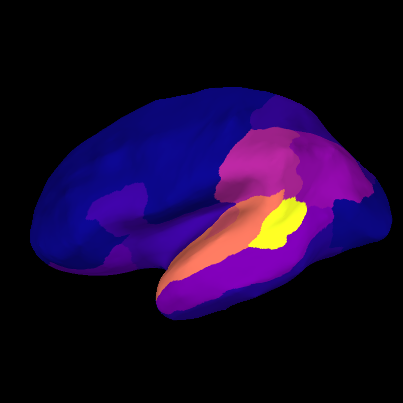

Note
Go to the end to download the full example code.
Source-level RSA using ROI’s#
In this example, we use anatomical labels as Regions Of Interest (ROIs). Rather than using a searchlight, we compute RDMs for each ROI and then compute RSA with a single model RDM.
The dataset will be the MNE-sample dataset: a collection of 288 epochs in which the participant was presented with an auditory beep or visual stimulus to either the left or right ear or visual field.
# sphinx_gallery_thumbnail_number=2
# Import required packages
import mne
import mne_rsa
mne.set_log_level(True) # Be less verbose
mne.viz.set_3d_backend("pyvista")
Using pyvistaqt 3d backend.
We’ll be using the data from the MNE-sample set. To speed up computations in this example, we’re going to use one of the sparse source spaces from the testing set.
sample_root = mne.datasets.sample.data_path(verbose=True)
testing_root = mne.datasets.testing.data_path(verbose=True)
sample_path = sample_root / "MEG" / "sample"
testing_path = testing_root / "MEG" / "sample"
subjects_dir = sample_root / "subjects"
Using default location ~/mne_data for testing...
Dataset testing version 0.0 out of date, latest version is 0.169
0.00B [00:00, ?B/s]
1.05MB [00:00, 8.11MB/s]
1.86MB [00:00, 8.07MB/s]
2.88MB [00:00, 8.01MB/s]
3.69MB [00:00, 7.99MB/s]
4.65MB [00:00, 8.54MB/s]
5.51MB [00:00, 7.56MB/s]
6.34MB [00:00, 7.78MB/s]
7.14MB [00:00, 7.66MB/s]
7.91MB [00:01, 7.68MB/s]
8.69MB [00:01, 7.66MB/s]
9.70MB [00:01, 7.71MB/s]
10.7MB [00:01, 7.89MB/s]
11.8MB [00:01, 8.04MB/s]
12.8MB [00:01, 8.11MB/s]
13.9MB [00:01, 8.51MB/s]
15.2MB [00:01, 9.37MB/s]
16.4MB [00:01, 9.97MB/s]
17.4MB [00:02, 8.36MB/s]
18.4MB [00:02, 8.56MB/s]
19.4MB [00:02, 9.01MB/s]
20.4MB [00:02, 8.87MB/s]
21.4MB [00:02, 7.31MB/s]
22.1MB [00:02, 6.31MB/s]
22.8MB [00:03, 5.01MB/s]
23.4MB [00:03, 4.98MB/s]
23.9MB [00:03, 4.42MB/s]
24.4MB [00:03, 4.08MB/s]
24.9MB [00:03, 3.74MB/s]
25.4MB [00:03, 3.58MB/s]
26.0MB [00:03, 3.47MB/s]
26.5MB [00:04, 3.49MB/s]
27.0MB [00:04, 3.38MB/s]
27.5MB [00:04, 3.29MB/s]
28.1MB [00:04, 3.27MB/s]
28.6MB [00:04, 3.26MB/s]
29.1MB [00:04, 3.22MB/s]
29.6MB [00:05, 3.34MB/s]
30.1MB [00:05, 3.24MB/s]
30.7MB [00:05, 3.23MB/s]
31.2MB [00:05, 3.22MB/s]
31.7MB [00:05, 3.44MB/s]
32.5MB [00:06, 2.98MB/s]
33.0MB [00:06, 3.36MB/s]
33.6MB [00:06, 3.51MB/s]
34.1MB [00:06, 3.79MB/s]
34.6MB [00:06, 3.84MB/s]
35.1MB [00:06, 3.99MB/s]
35.7MB [00:06, 4.11MB/s]
36.2MB [00:06, 4.27MB/s]
36.7MB [00:06, 4.19MB/s]
37.2MB [00:07, 4.24MB/s]
37.7MB [00:07, 4.27MB/s]
38.3MB [00:07, 4.34MB/s]
38.8MB [00:07, 4.36MB/s]
39.3MB [00:07, 4.34MB/s]
39.8MB [00:07, 4.38MB/s]
40.6MB [00:07, 4.79MB/s]
41.1MB [00:08, 3.42MB/s]
42.2MB [00:08, 4.79MB/s]
43.3MB [00:08, 5.95MB/s]
44.3MB [00:08, 6.97MB/s]
45.4MB [00:08, 7.76MB/s]
46.4MB [00:08, 8.36MB/s]
47.4MB [00:08, 8.90MB/s]
48.4MB [00:08, 8.97MB/s]
49.3MB [00:08, 8.95MB/s]
50.3MB [00:09, 9.14MB/s]
51.4MB [00:09, 9.38MB/s]
52.4MB [00:09, 9.55MB/s]
53.4MB [00:09, 8.95MB/s]
54.3MB [00:09, 6.43MB/s]
55.0MB [00:09, 6.45MB/s]
55.8MB [00:09, 5.61MB/s]
56.4MB [00:10, 4.82MB/s]
56.9MB [00:10, 4.75MB/s]
57.7MB [00:10, 4.77MB/s]
58.2MB [00:10, 4.65MB/s]
58.7MB [00:10, 4.57MB/s]
59.2MB [00:10, 4.32MB/s]
59.8MB [00:10, 4.30MB/s]
60.3MB [00:11, 4.30MB/s]
60.8MB [00:11, 4.34MB/s]
61.3MB [00:11, 4.37MB/s]
61.9MB [00:11, 4.09MB/s]
62.4MB [00:11, 4.46MB/s]
62.9MB [00:11, 4.33MB/s]
63.4MB [00:11, 4.39MB/s]
64.0MB [00:11, 4.40MB/s]
64.5MB [00:11, 4.36MB/s]
65.0MB [00:12, 4.39MB/s]
65.8MB [00:12, 4.79MB/s]
66.3MB [00:12, 4.61MB/s]
66.8MB [00:12, 4.63MB/s]
67.4MB [00:12, 4.59MB/s]
67.9MB [00:12, 4.41MB/s]
68.4MB [00:12, 4.44MB/s]
68.9MB [00:12, 4.43MB/s]
69.5MB [00:13, 4.47MB/s]
70.0MB [00:13, 4.34MB/s]
70.5MB [00:13, 4.36MB/s]
71.0MB [00:13, 4.39MB/s]
71.6MB [00:13, 4.38MB/s]
72.1MB [00:13, 4.29MB/s]
72.6MB [00:13, 4.36MB/s]
73.1MB [00:13, 4.44MB/s]
73.7MB [00:14, 4.62MB/s]
74.4MB [00:14, 4.90MB/s]
75.2MB [00:14, 5.64MB/s]
76.3MB [00:14, 6.84MB/s]
77.3MB [00:14, 7.43MB/s]
78.4MB [00:14, 8.15MB/s]
79.4MB [00:14, 8.70MB/s]
80.5MB [00:14, 9.18MB/s]
81.5MB [00:14, 9.47MB/s]
82.6MB [00:14, 9.68MB/s]
83.6MB [00:15, 9.78MB/s]
84.7MB [00:15, 9.73MB/s]
85.7MB [00:15, 9.91MB/s]
86.8MB [00:15, 9.97MB/s]
87.8MB [00:15, 10.0MB/s]
88.9MB [00:15, 9.94MB/s]
90.2MB [00:15, 10.2MB/s]
91.2MB [00:15, 10.1MB/s]
92.3MB [00:15, 10.2MB/s]
93.3MB [00:16, 10.1MB/s]
94.4MB [00:16, 10.1MB/s]
95.4MB [00:16, 10.2MB/s]
96.5MB [00:16, 9.94MB/s]
97.5MB [00:16, 9.98MB/s]
98.6MB [00:16, 10.1MB/s]
99.6MB [00:16, 8.20MB/s]
100MB [00:16, 6.61MB/s]
101MB [00:17, 6.20MB/s]
102MB [00:17, 6.23MB/s]
103MB [00:17, 6.30MB/s]
104MB [00:17, 7.23MB/s]
105MB [00:17, 7.99MB/s]
106MB [00:17, 8.59MB/s]
107MB [00:17, 9.08MB/s]
108MB [00:17, 8.95MB/s]
109MB [00:17, 8.20MB/s]
109MB [00:18, 8.24MB/s]
110MB [00:18, 8.09MB/s]
111MB [00:18, 8.07MB/s]
112MB [00:18, 8.02MB/s]
113MB [00:18, 6.83MB/s]
115MB [00:18, 9.45MB/s]
117MB [00:18, 11.6MB/s]
119MB [00:18, 13.3MB/s]
121MB [00:19, 14.5MB/s]
122MB [00:19, 15.7MB/s]
124MB [00:19, 16.3MB/s]
126MB [00:19, 16.9MB/s]
128MB [00:19, 11.8MB/s]
130MB [00:19, 12.7MB/s]
131MB [00:19, 13.8MB/s]
134MB [00:19, 16.1MB/s]
135MB [00:20, 15.2MB/s]
137MB [00:20, 15.3MB/s]
139MB [00:20, 16.9MB/s]
143MB [00:20, 21.5MB/s]
145MB [00:20, 17.5MB/s]
147MB [00:20, 17.9MB/s]
149MB [00:20, 17.8MB/s]
150MB [00:20, 17.3MB/s]
152MB [00:20, 16.4MB/s]
154MB [00:21, 16.4MB/s]
156MB [00:21, 14.9MB/s]
157MB [00:21, 14.2MB/s]
159MB [00:21, 8.82MB/s]
160MB [00:21, 7.93MB/s]
161MB [00:22, 6.21MB/s]
164MB [00:22, 9.78MB/s]
166MB [00:22, 13.4MB/s]
169MB [00:22, 16.8MB/s]
172MB [00:22, 16.7MB/s]
174MB [00:22, 17.3MB/s]
176MB [00:22, 17.2MB/s]
177MB [00:22, 17.3MB/s]
180MB [00:23, 18.0MB/s]
182MB [00:23, 19.0MB/s]
185MB [00:23, 21.1MB/s]
187MB [00:23, 18.7MB/s]
189MB [00:23, 15.5MB/s]
190MB [00:23, 13.3MB/s]
192MB [00:23, 14.7MB/s]
195MB [00:23, 17.9MB/s]
197MB [00:24, 14.7MB/s]
199MB [00:24, 12.8MB/s]
200MB [00:24, 10.3MB/s]
202MB [00:24, 11.1MB/s]
204MB [00:24, 13.6MB/s]
206MB [00:24, 13.5MB/s]
207MB [00:25, 8.69MB/s]
210MB [00:25, 11.1MB/s]
211MB [00:25, 7.95MB/s]
212MB [00:25, 8.55MB/s]
213MB [00:25, 8.72MB/s]
215MB [00:26, 10.7MB/s]
217MB [00:26, 9.84MB/s]
218MB [00:26, 7.74MB/s]
220MB [00:26, 9.89MB/s]
221MB [00:26, 10.3MB/s]
222MB [00:26, 7.42MB/s]
223MB [00:27, 5.33MB/s]
225MB [00:27, 7.57MB/s]
226MB [00:27, 8.11MB/s]
227MB [00:27, 6.33MB/s]
229MB [00:27, 7.64MB/s]
231MB [00:28, 10.2MB/s]
232MB [00:28, 7.84MB/s]
233MB [00:28, 7.56MB/s]
235MB [00:28, 8.83MB/s]
238MB [00:28, 11.1MB/s]
239MB [00:28, 10.6MB/s]
240MB [00:29, 7.94MB/s]
242MB [00:29, 9.96MB/s]
244MB [00:29, 10.9MB/s]
246MB [00:29, 7.94MB/s]
248MB [00:29, 10.4MB/s]
249MB [00:29, 9.76MB/s]
251MB [00:30, 11.9MB/s]
253MB [00:30, 9.49MB/s]
254MB [00:30, 8.67MB/s]
256MB [00:30, 10.9MB/s]
257MB [00:30, 11.3MB/s]
259MB [00:31, 7.94MB/s]
260MB [00:31, 9.54MB/s]
262MB [00:31, 11.0MB/s]
264MB [00:31, 12.9MB/s]
266MB [00:31, 8.22MB/s]
268MB [00:31, 10.1MB/s]
270MB [00:31, 11.2MB/s]
271MB [00:32, 8.02MB/s]
273MB [00:32, 10.5MB/s]
275MB [00:32, 11.4MB/s]
277MB [00:32, 13.5MB/s]
279MB [00:32, 9.40MB/s]
280MB [00:33, 9.58MB/s]
282MB [00:33, 11.6MB/s]
284MB [00:33, 10.6MB/s]
285MB [00:33, 8.06MB/s]
287MB [00:33, 9.46MB/s]
288MB [00:33, 10.9MB/s]
290MB [00:33, 11.8MB/s]
291MB [00:34, 7.46MB/s]
293MB [00:34, 8.71MB/s]
295MB [00:34, 10.4MB/s]
296MB [00:34, 10.2MB/s]
297MB [00:34, 7.26MB/s]
299MB [00:35, 9.87MB/s]
302MB [00:35, 13.1MB/s]
305MB [00:35, 15.9MB/s]
307MB [00:35, 18.3MB/s]
310MB [00:35, 20.1MB/s]
312MB [00:35, 21.7MB/s]
315MB [00:35, 22.5MB/s]
318MB [00:35, 23.4MB/s]
320MB [00:35, 24.0MB/s]
323MB [00:35, 24.6MB/s]
326MB [00:36, 24.6MB/s]
328MB [00:36, 24.2MB/s]
331MB [00:36, 13.8MB/s]
332MB [00:36, 14.9MB/s]
334MB [00:36, 12.6MB/s]
336MB [00:37, 9.95MB/s]
338MB [00:37, 11.7MB/s]
340MB [00:37, 11.5MB/s]
341MB [00:37, 8.33MB/s]
343MB [00:37, 10.2MB/s]
346MB [00:37, 13.3MB/s]
348MB [00:38, 15.1MB/s]
350MB [00:38, 17.5MB/s]
353MB [00:38, 19.3MB/s]
355MB [00:38, 20.7MB/s]
358MB [00:38, 21.8MB/s]
361MB [00:38, 22.6MB/s]
363MB [00:38, 22.0MB/s]
365MB [00:38, 22.3MB/s]
368MB [00:38, 22.5MB/s]
370MB [00:38, 22.8MB/s]
372MB [00:39, 13.2MB/s]
375MB [00:39, 15.4MB/s]
377MB [00:39, 17.6MB/s]
380MB [00:39, 19.2MB/s]
383MB [00:39, 21.2MB/s]
386MB [00:39, 22.0MB/s]
388MB [00:40, 12.4MB/s]
390MB [00:40, 12.0MB/s]
392MB [00:40, 13.5MB/s]
394MB [00:40, 15.5MB/s]
397MB [00:40, 18.1MB/s]
400MB [00:40, 21.0MB/s]
403MB [00:40, 21.8MB/s]
405MB [00:41, 13.0MB/s]
407MB [00:41, 12.7MB/s]
409MB [00:41, 14.8MB/s]
412MB [00:41, 17.0MB/s]
415MB [00:41, 19.7MB/s]
417MB [00:41, 18.8MB/s]
419MB [00:42, 13.2MB/s]
421MB [00:42, 12.3MB/s]
422MB [00:42, 12.6MB/s]
424MB [00:42, 13.9MB/s]
426MB [00:42, 15.4MB/s]
428MB [00:42, 13.3MB/s]
429MB [00:43, 7.73MB/s]
431MB [00:43, 7.68MB/s]
432MB [00:43, 9.17MB/s]
435MB [00:43, 11.9MB/s]
437MB [00:43, 10.3MB/s]
438MB [00:44, 9.13MB/s]
439MB [00:44, 8.53MB/s]
440MB [00:44, 7.88MB/s]
441MB [00:44, 8.18MB/s]
443MB [00:44, 8.88MB/s]
444MB [00:44, 9.81MB/s]
445MB [00:44, 9.72MB/s]
446MB [00:45, 10.2MB/s]
448MB [00:45, 10.4MB/s]
449MB [00:45, 10.7MB/s]
450MB [00:45, 10.7MB/s]
452MB [00:45, 10.9MB/s]
453MB [00:45, 11.1MB/s]
454MB [00:45, 11.1MB/s]
456MB [00:45, 11.1MB/s]
457MB [00:45, 11.1MB/s]
458MB [00:46, 11.1MB/s]
459MB [00:46, 7.91MB/s]
460MB [00:46, 6.58MB/s]
461MB [00:46, 5.60MB/s]
462MB [00:46, 4.79MB/s]
462MB [00:47, 4.57MB/s]
463MB [00:47, 4.25MB/s]
463MB [00:47, 4.02MB/s]
464MB [00:47, 3.74MB/s]
465MB [00:47, 4.32MB/s]
465MB [00:47, 4.03MB/s]
466MB [00:47, 4.15MB/s]
468MB [00:48, 5.04MB/s]
468MB [00:48, 4.92MB/s]
469MB [00:48, 4.84MB/s]
469MB [00:48, 4.79MB/s]
470MB [00:48, 4.74MB/s]
470MB [00:48, 4.68MB/s]
471MB [00:49, 4.59MB/s]
471MB [00:49, 4.52MB/s]
472MB [00:49, 4.61MB/s]
472MB [00:49, 4.58MB/s]
474MB [00:49, 7.69MB/s]
475MB [00:49, 4.73MB/s]
476MB [00:49, 4.38MB/s]
476MB [00:50, 4.35MB/s]
477MB [00:50, 4.37MB/s]
477MB [00:50, 4.42MB/s]
478MB [00:50, 4.47MB/s]
478MB [00:50, 4.50MB/s]
479MB [00:50, 4.49MB/s]
480MB [00:50, 6.48MB/s]
482MB [00:50, 9.05MB/s]
483MB [00:50, 11.4MB/s]
485MB [00:51, 13.5MB/s]
487MB [00:51, 10.3MB/s]
488MB [00:51, 11.1MB/s]
490MB [00:51, 12.7MB/s]
492MB [00:51, 14.1MB/s]
494MB [00:51, 13.6MB/s]
495MB [00:52, 9.39MB/s]
496MB [00:52, 7.71MB/s]
497MB [00:52, 6.48MB/s]
498MB [00:52, 5.99MB/s]
499MB [00:52, 5.85MB/s]
500MB [00:53, 5.27MB/s]
501MB [00:53, 5.23MB/s]
501MB [00:53, 5.17MB/s]
502MB [00:53, 5.08MB/s]
502MB [00:53, 4.98MB/s]
503MB [00:53, 4.82MB/s]
503MB [00:53, 4.62MB/s]
504MB [00:53, 4.34MB/s]
504MB [00:54, 4.43MB/s]
505MB [00:54, 4.57MB/s]
507MB [00:54, 8.22MB/s]
509MB [00:54, 12.2MB/s]
511MB [00:54, 14.5MB/s]
513MB [00:54, 16.1MB/s]
515MB [00:54, 17.0MB/s]
517MB [00:54, 17.9MB/s]
520MB [00:54, 18.5MB/s]
522MB [00:55, 19.0MB/s]
524MB [00:55, 19.5MB/s]
526MB [00:55, 19.8MB/s]
528MB [00:55, 20.1MB/s]
530MB [00:55, 20.0MB/s]
532MB [00:55, 19.9MB/s]
534MB [00:55, 10.2MB/s]
536MB [00:56, 7.71MB/s]
537MB [00:56, 6.56MB/s]
538MB [00:56, 6.32MB/s]
539MB [00:56, 6.35MB/s]
541MB [00:57, 8.42MB/s]
543MB [00:57, 10.7MB/s]
545MB [00:57, 12.9MB/s]
547MB [00:57, 14.5MB/s]
549MB [00:57, 16.1MB/s]
551MB [00:57, 17.2MB/s]
553MB [00:57, 18.0MB/s]
555MB [00:57, 18.7MB/s]
557MB [00:57, 19.2MB/s]
559MB [00:57, 19.7MB/s]
562MB [00:58, 19.9MB/s]
564MB [00:58, 20.2MB/s]
566MB [00:58, 20.0MB/s]
568MB [00:58, 9.37MB/s]
569MB [00:59, 7.45MB/s]
570MB [00:59, 6.75MB/s]
571MB [00:59, 6.06MB/s]
572MB [00:59, 6.35MB/s]
574MB [00:59, 8.77MB/s]
576MB [00:59, 11.0MB/s]
579MB [00:59, 12.9MB/s]
581MB [01:00, 14.5MB/s]
583MB [01:00, 15.7MB/s]
585MB [01:00, 17.4MB/s]
587MB [01:00, 17.8MB/s]
589MB [01:00, 18.4MB/s]
591MB [01:00, 19.1MB/s]
593MB [01:00, 19.4MB/s]
595MB [01:00, 19.8MB/s]
597MB [01:00, 19.5MB/s]
599MB [01:01, 18.4MB/s]
601MB [01:01, 8.66MB/s]
603MB [01:01, 7.19MB/s]
604MB [01:02, 6.08MB/s]
605MB [01:02, 5.94MB/s]
606MB [01:02, 6.36MB/s]
608MB [01:02, 8.86MB/s]
610MB [01:02, 11.1MB/s]
612MB [01:02, 13.2MB/s]
614MB [01:02, 14.7MB/s]
616MB [01:02, 16.2MB/s]
618MB [01:03, 17.3MB/s]
620MB [01:03, 18.1MB/s]
622MB [01:03, 18.8MB/s]
625MB [01:03, 19.7MB/s]
627MB [01:03, 19.8MB/s]
629MB [01:03, 20.1MB/s]
631MB [01:03, 20.0MB/s]
633MB [01:03, 20.5MB/s]
635MB [01:04, 8.58MB/s]
637MB [01:04, 6.98MB/s]
638MB [01:05, 6.03MB/s]
639MB [01:05, 6.48MB/s]
640MB [01:05, 4.90MB/s]
641MB [01:05, 5.11MB/s]
641MB [01:05, 4.94MB/s]
642MB [01:05, 4.51MB/s]
643MB [01:06, 4.55MB/s]
643MB [01:06, 4.57MB/s]
644MB [01:06, 4.53MB/s]
644MB [01:06, 4.47MB/s]
645MB [01:06, 4.43MB/s]
645MB [01:06, 5.10MB/s]
646MB [01:06, 5.53MB/s]
647MB [01:06, 5.87MB/s]
648MB [01:07, 6.12MB/s]
649MB [01:07, 6.24MB/s]
649MB [01:07, 6.40MB/s]
650MB [01:07, 6.50MB/s]
651MB [01:07, 6.49MB/s]
652MB [01:07, 6.40MB/s]
652MB [01:07, 6.47MB/s]
653MB [01:07, 6.58MB/s]
654MB [01:07, 6.61MB/s]
655MB [01:08, 6.69MB/s]
656MB [01:08, 6.65MB/s]
656MB [01:08, 6.89MB/s]
657MB [01:08, 6.90MB/s]
658MB [01:08, 6.95MB/s]
659MB [01:08, 7.03MB/s]
660MB [01:08, 7.03MB/s]
660MB [01:08, 7.13MB/s]
661MB [01:08, 7.22MB/s]
662MB [01:09, 7.25MB/s]
663MB [01:09, 7.17MB/s]
663MB [01:09, 7.13MB/s]
664MB [01:09, 7.15MB/s]
665MB [01:09, 7.14MB/s]
666MB [01:09, 7.18MB/s]
667MB [01:09, 7.03MB/s]
667MB [01:09, 7.07MB/s]
668MB [01:10, 4.54MB/s]
669MB [01:10, 4.65MB/s]
669MB [01:10, 4.70MB/s]
670MB [01:10, 4.68MB/s]
670MB [01:10, 4.66MB/s]
671MB [01:10, 4.54MB/s]
671MB [01:10, 4.40MB/s]
672MB [01:10, 4.27MB/s]
672MB [01:11, 4.18MB/s]
673MB [01:11, 4.34MB/s]
675MB [01:11, 8.56MB/s]
677MB [01:11, 11.4MB/s]
679MB [01:11, 14.1MB/s]
681MB [01:11, 15.8MB/s]
683MB [01:11, 17.1MB/s]
685MB [01:11, 18.0MB/s]
687MB [01:11, 18.7MB/s]
689MB [01:12, 19.1MB/s]
691MB [01:12, 19.4MB/s]
693MB [01:12, 19.8MB/s]
695MB [01:12, 19.9MB/s]
698MB [01:12, 20.1MB/s]
700MB [01:12, 20.2MB/s]
702MB [01:12, 10.5MB/s]
703MB [01:13, 7.83MB/s]
704MB [01:13, 6.72MB/s]
705MB [01:13, 6.03MB/s]
706MB [01:13, 6.24MB/s]
708MB [01:14, 6.00MB/s]
708MB [01:14, 6.10MB/s]
709MB [01:14, 5.49MB/s]
710MB [01:14, 5.42MB/s]
710MB [01:14, 5.43MB/s]
711MB [01:14, 4.67MB/s]
711MB [01:14, 4.59MB/s]
712MB [01:15, 4.54MB/s]
712MB [01:15, 4.56MB/s]
714MB [01:15, 7.88MB/s]
716MB [01:15, 11.2MB/s]
718MB [01:15, 13.6MB/s]
720MB [01:15, 15.5MB/s]
722MB [01:15, 16.7MB/s]
725MB [01:15, 18.4MB/s]
727MB [01:15, 18.3MB/s]
729MB [01:16, 19.8MB/s]
731MB [01:16, 10.3MB/s]
733MB [01:16, 7.92MB/s]
734MB [01:17, 6.62MB/s]
735MB [01:17, 7.84MB/s]
736MB [01:17, 7.29MB/s]
737MB [01:17, 6.23MB/s]
738MB [01:17, 5.79MB/s]
739MB [01:17, 5.99MB/s]
740MB [01:18, 5.34MB/s]
740MB [01:18, 5.38MB/s]
741MB [01:18, 5.44MB/s]
742MB [01:18, 4.97MB/s]
743MB [01:18, 4.97MB/s]
743MB [01:18, 4.83MB/s]
744MB [01:18, 4.75MB/s]
744MB [01:19, 4.71MB/s]
745MB [01:19, 4.58MB/s]
745MB [01:19, 4.62MB/s]
746MB [01:19, 4.50MB/s]
746MB [01:19, 4.68MB/s]
747MB [01:19, 4.62MB/s]
749MB [01:19, 8.13MB/s]
751MB [01:19, 11.6MB/s]
753MB [01:19, 12.8MB/s]
755MB [01:20, 15.3MB/s]
757MB [01:20, 16.8MB/s]
759MB [01:20, 17.8MB/s]
761MB [01:20, 17.9MB/s]
763MB [01:20, 18.8MB/s]
765MB [01:20, 19.3MB/s]
767MB [01:20, 19.9MB/s]
769MB [01:20, 20.2MB/s]
772MB [01:20, 20.5MB/s]
774MB [01:20, 20.7MB/s]
776MB [01:21, 15.4MB/s]
778MB [01:21, 9.84MB/s]
779MB [01:21, 7.90MB/s]
780MB [01:22, 6.43MB/s]
782MB [01:22, 7.47MB/s]
783MB [01:22, 6.85MB/s]
784MB [01:22, 6.34MB/s]
784MB [01:22, 5.85MB/s]
785MB [01:22, 5.69MB/s]
786MB [01:23, 5.00MB/s]
786MB [01:23, 4.99MB/s]
787MB [01:23, 4.82MB/s]
789MB [01:23, 6.54MB/s]
789MB [01:23, 6.09MB/s]
790MB [01:23, 5.52MB/s]
790MB [01:23, 5.37MB/s]
791MB [01:24, 5.14MB/s]
791MB [01:24, 4.91MB/s]
792MB [01:24, 4.64MB/s]
792MB [01:24, 4.44MB/s]
793MB [01:24, 4.44MB/s]
793MB [01:24, 4.42MB/s]
795MB [01:24, 8.70MB/s]
797MB [01:24, 11.2MB/s]
799MB [01:24, 13.1MB/s]
801MB [01:25, 14.3MB/s]
803MB [01:25, 15.7MB/s]
805MB [01:25, 15.9MB/s]
807MB [01:25, 16.8MB/s]
809MB [01:25, 17.2MB/s]
811MB [01:25, 18.5MB/s]
813MB [01:25, 17.6MB/s]
815MB [01:25, 14.2MB/s]
816MB [01:25, 13.3MB/s]
818MB [01:26, 13.2MB/s]
819MB [01:26, 13.4MB/s]
821MB [01:26, 13.3MB/s]
822MB [01:26, 13.3MB/s]
823MB [01:26, 13.3MB/s]
825MB [01:26, 13.4MB/s]
827MB [01:26, 14.8MB/s]
830MB [01:26, 18.4MB/s]
832MB [01:27, 14.2MB/s]
835MB [01:27, 18.1MB/s]
837MB [01:27, 18.6MB/s]
839MB [01:27, 19.3MB/s]
841MB [01:27, 18.9MB/s]
843MB [01:27, 18.1MB/s]
846MB [01:27, 20.7MB/s]
849MB [01:27, 22.7MB/s]
851MB [01:27, 24.1MB/s]
854MB [01:28, 25.0MB/s]
857MB [01:28, 25.1MB/s]
860MB [01:28, 27.4MB/s]
864MB [01:28, 28.8MB/s]
866MB [01:29, 9.91MB/s]
869MB [01:29, 6.79MB/s]
870MB [01:30, 5.57MB/s]
871MB [01:30, 5.14MB/s]
872MB [01:30, 5.06MB/s]
874MB [01:30, 5.92MB/s]
876MB [01:30, 7.62MB/s]
878MB [01:31, 9.56MB/s]
879MB [01:31, 11.3MB/s]
881MB [01:31, 11.9MB/s]
883MB [01:31, 12.6MB/s]
884MB [01:31, 13.8MB/s]
886MB [01:31, 14.3MB/s]
888MB [01:31, 13.1MB/s]
890MB [01:31, 15.0MB/s]
892MB [01:32, 9.21MB/s]
893MB [01:32, 9.47MB/s]
895MB [01:32, 11.7MB/s]
896MB [01:32, 9.81MB/s]
898MB [01:32, 7.17MB/s]
899MB [01:33, 6.67MB/s]
899MB [01:33, 5.93MB/s]
903MB [01:33, 10.3MB/s]
905MB [01:33, 14.0MB/s]
907MB [01:33, 14.1MB/s]
909MB [01:33, 14.6MB/s]
911MB [01:33, 12.4MB/s]
912MB [01:34, 8.45MB/s]
913MB [01:34, 7.39MB/s]
914MB [01:34, 6.50MB/s]
915MB [01:34, 6.27MB/s]
916MB [01:35, 6.28MB/s]
917MB [01:35, 5.28MB/s]
917MB [01:35, 5.04MB/s]
919MB [01:35, 6.89MB/s]
919MB [01:35, 6.88MB/s]
920MB [01:35, 6.44MB/s]
921MB [01:35, 5.51MB/s]
922MB [01:36, 6.69MB/s]
924MB [01:36, 9.33MB/s]
925MB [01:36, 8.94MB/s]
926MB [01:36, 7.24MB/s]
927MB [01:36, 6.60MB/s]
927MB [01:36, 6.67MB/s]
928MB [01:36, 5.35MB/s]
929MB [01:37, 5.09MB/s]
929MB [01:37, 4.94MB/s]
930MB [01:37, 5.31MB/s]
931MB [01:37, 4.92MB/s]
931MB [01:37, 4.57MB/s]
932MB [01:37, 4.60MB/s]
933MB [01:37, 7.27MB/s]
934MB [01:37, 6.62MB/s]
935MB [01:38, 5.35MB/s]
936MB [01:38, 5.31MB/s]
936MB [01:38, 5.81MB/s]
937MB [01:38, 5.56MB/s]
938MB [01:38, 4.95MB/s]
938MB [01:38, 4.70MB/s]
939MB [01:38, 5.16MB/s]
940MB [01:39, 5.24MB/s]
940MB [01:39, 4.82MB/s]
941MB [01:39, 4.53MB/s]
942MB [01:39, 5.11MB/s]
942MB [01:39, 5.32MB/s]
943MB [01:39, 5.05MB/s]
943MB [01:39, 4.46MB/s]
944MB [01:40, 4.28MB/s]
945MB [01:40, 5.09MB/s]
945MB [01:40, 5.10MB/s]
946MB [01:40, 4.66MB/s]
946MB [01:40, 4.38MB/s]
947MB [01:40, 4.27MB/s]
947MB [01:40, 4.18MB/s]
948MB [01:40, 4.23MB/s]
949MB [01:41, 5.12MB/s]
949MB [01:41, 5.74MB/s]
951MB [01:41, 8.04MB/s]
952MB [01:41, 6.75MB/s]
953MB [01:41, 6.88MB/s]
954MB [01:41, 8.67MB/s]
955MB [01:41, 7.42MB/s]
956MB [01:42, 6.51MB/s]
958MB [01:42, 8.30MB/s]
959MB [01:42, 7.42MB/s]
959MB [01:42, 7.81MB/s]
961MB [01:42, 8.76MB/s]
962MB [01:42, 7.84MB/s]
964MB [01:42, 9.89MB/s]
965MB [01:43, 7.58MB/s]
966MB [01:43, 9.27MB/s]
967MB [01:43, 8.33MB/s]
968MB [01:43, 6.99MB/s]
970MB [01:43, 8.43MB/s]
971MB [01:43, 7.71MB/s]
972MB [01:43, 8.44MB/s]
973MB [01:44, 8.68MB/s]
974MB [01:44, 7.83MB/s]
976MB [01:44, 9.79MB/s]
977MB [01:44, 7.63MB/s]
979MB [01:44, 9.77MB/s]
980MB [01:44, 7.51MB/s]
981MB [01:45, 6.70MB/s]
983MB [01:45, 9.52MB/s]
986MB [01:45, 13.0MB/s]
988MB [01:45, 15.5MB/s]
991MB [01:45, 17.9MB/s]
993MB [01:45, 17.1MB/s]
995MB [01:45, 17.8MB/s]
997MB [01:46, 9.96MB/s]
999MB [01:46, 11.7MB/s]
1.00GB [01:46, 10.8MB/s]
1.00GB [01:46, 8.49MB/s]
1.00GB [01:46, 10.4MB/s]
1.01GB [01:47, 9.62MB/s]
1.01GB [01:47, 6.70MB/s]
1.01GB [01:47, 8.50MB/s]
1.01GB [01:47, 7.66MB/s]
1.01GB [01:47, 6.76MB/s]
1.01GB [01:48, 5.68MB/s]
1.01GB [01:48, 8.42MB/s]
1.02GB [01:48, 7.78MB/s]
1.02GB [01:48, 10.6MB/s]
1.02GB [01:48, 7.68MB/s]
1.02GB [01:48, 7.93MB/s]
1.02GB [01:49, 10.3MB/s]
1.02GB [01:49, 8.51MB/s]
1.02GB [01:49, 7.77MB/s]
1.03GB [01:49, 10.2MB/s]
1.03GB [01:49, 10.6MB/s]
1.03GB [01:50, 6.52MB/s]
1.03GB [01:50, 8.93MB/s]
1.03GB [01:50, 9.91MB/s]
1.03GB [01:50, 6.43MB/s]
1.04GB [01:50, 8.58MB/s]
1.04GB [01:50, 9.98MB/s]
1.04GB [01:51, 7.12MB/s]
1.04GB [01:51, 7.08MB/s]
1.04GB [01:51, 9.44MB/s]
1.04GB [01:51, 9.17MB/s]
1.05GB [01:52, 7.12MB/s]
1.05GB [01:52, 6.12MB/s]
1.05GB [01:52, 5.67MB/s]
1.05GB [01:52, 5.91MB/s]
1.05GB [01:52, 5.91MB/s]
1.05GB [01:52, 5.30MB/s]
1.05GB [01:52, 7.69MB/s]
1.05GB [01:53, 13.5MB/s]
1.06GB [01:53, 17.4MB/s]
1.06GB [01:53, 21.3MB/s]
1.06GB [01:53, 23.8MB/s]
1.07GB [01:53, 26.1MB/s]
1.07GB [01:53, 27.5MB/s]
1.07GB [01:53, 23.5MB/s]
1.08GB [01:53, 22.4MB/s]
1.08GB [01:54, 12.1MB/s]
1.08GB [01:54, 12.5MB/s]
1.08GB [01:54, 12.5MB/s]
1.08GB [01:54, 12.8MB/s]
1.08GB [01:55, 8.61MB/s]
1.09GB [01:55, 8.11MB/s]
1.09GB [01:55, 7.96MB/s]
1.09GB [01:55, 6.74MB/s]
1.09GB [01:55, 6.51MB/s]
1.09GB [01:55, 6.83MB/s]
1.09GB [01:56, 6.38MB/s]
1.09GB [01:56, 5.98MB/s]
1.09GB [01:56, 8.15MB/s]
1.09GB [01:56, 6.58MB/s]
1.09GB [01:56, 4.92MB/s]
1.10GB [01:56, 6.45MB/s]
1.10GB [01:57, 6.10MB/s]
1.10GB [01:57, 5.53MB/s]
1.10GB [01:57, 5.44MB/s]
1.10GB [01:57, 5.00MB/s]
1.10GB [01:57, 4.56MB/s]
1.10GB [01:57, 6.76MB/s]
1.10GB [01:58, 6.16MB/s]
1.10GB [01:58, 4.31MB/s]
0.00B [00:00, ?B/s]
0.00B [00:00, ?B/s]
Download complete in 02m17s (1053.0 MB)
Creating epochs from the continuous (raw) data. We downsample to 100 Hz to speed up the RSA computations later on.
raw = mne.io.read_raw_fif(sample_path / "sample_audvis_filt-0-40_raw.fif")
events = mne.read_events(sample_path / "sample_audvis_filt-0-40_raw-eve.fif")
event_id = {"audio/left": 1, "audio/right": 2, "visual/left": 3, "visual/right": 4}
epochs = mne.Epochs(raw, events, event_id, preload=True)
epochs.resample(100)
Opening raw data file /home/runner/mne_data/MNE-sample-data/MEG/sample/sample_audvis_filt-0-40_raw.fif...
Read a total of 4 projection items:
PCA-v1 (1 x 102) idle
PCA-v2 (1 x 102) idle
PCA-v3 (1 x 102) idle
Average EEG reference (1 x 60) idle
Range : 6450 ... 48149 = 42.956 ... 320.665 secs
Ready.
Not setting metadata
288 matching events found
Setting baseline interval to [-0.19979521315838786, 0.0] s
Applying baseline correction (mode: mean)
Created an SSP operator (subspace dimension = 4)
4 projection items activated
Loading data for 288 events and 106 original time points ...
0 bad epochs dropped
It’s important that the model RDM and the epochs are in the same order, so that each row in the model RDM will correspond to an epoch. The model RDM will be easier to interpret visually if the data is ordered such that all epochs belonging to the same experimental condition are right next to each-other, so patterns jump out. This can be achieved by first splitting the epochs by experimental condition and then concatenating them together again.
epoch_splits = [
epochs[cl] for cl in ["audio/left", "audio/right", "visual/left", "visual/right"]
]
epochs = mne.concatenate_epochs(epoch_splits)
Not setting metadata
288 matching events found
Applying baseline correction (mode: mean)
Created an SSP operator (subspace dimension = 4)
Now that the epochs are in the proper order, we can create a RDM based on the experimental conditions. This type of RDM is referred to as a “sensitivity RDM”. Let’s create a sensitivity RDM that will pick up the left auditory response when RSA-ed against the MEG data. Since we want to capture areas where left beeps generate a large signal, we specify that left beeps should be similar to other left beeps. Since we do not want areas where visual stimuli generate a large signal, we specify that beeps must be different from visual stimuli. Furthermore, since in areas where visual stimuli generate only a small signal, random noise will dominate, we also specify that visual stimuli are different from other visual stimuli. Finally left and right auditory beeps will be somewhat similar.
def sensitivity_metric(event_id_1, event_id_2):
"""Determine similarity between two epochs, given their event ids."""
if event_id_1 == 1 and event_id_2 == 1:
return 0 # Completely similar
if event_id_1 == 2 and event_id_2 == 2:
return 0.5 # Somewhat similar
elif event_id_1 == 1 and event_id_2 == 2:
return 0.5 # Somewhat similar
elif event_id_1 == 2 and event_id_1 == 1:
return 0.5 # Somewhat similar
else:
return 1 # Not similar at all
model_rdm = mne_rsa.compute_rdm(epochs.events[:, 2], metric=sensitivity_metric)
mne_rsa.plot_rdms(model_rdm, title="Model RDM")

<Figure size 200x200 with 2 Axes>
This example is going to be on source-level, so let’s load the inverse operator and apply it to obtain a cortical surface source estimate for each epoch. To speed up the computation, we going to load an inverse operator from the testing dataset that was created using a sparse source space with not too many vertices.
inv = mne.minimum_norm.read_inverse_operator(
f"{testing_path}/sample_audvis_trunc-meg-eeg-oct-4-meg-inv.fif"
)
epochs_stc = mne.minimum_norm.apply_inverse_epochs(epochs, inv, lambda2=0.1111)
Reading inverse operator decomposition from /home/runner/mne_data/MNE-testing-data/MEG/sample/sample_audvis_trunc-meg-eeg-oct-4-meg-inv.fif...
Reading inverse operator info...
[done]
Reading inverse operator decomposition...
[done]
305 x 305 full covariance (kind = 1) found.
Read a total of 4 projection items:
PCA-v1 (1 x 102) active
PCA-v2 (1 x 102) active
PCA-v3 (1 x 102) active
Average EEG reference (1 x 60) active
Noise covariance matrix read.
1494 x 1494 diagonal covariance (kind = 2) found.
Source covariance matrix read.
1494 x 1494 diagonal covariance (kind = 6) found.
Orientation priors read.
1494 x 1494 diagonal covariance (kind = 5) found.
Depth priors read.
Did not find the desired covariance matrix (kind = 3)
Reading a source space...
Computing patch statistics...
Patch information added...
[done]
Reading a source space...
Computing patch statistics...
Patch information added...
[done]
2 source spaces read
Read a total of 4 projection items:
PCA-v1 (1 x 102) active
PCA-v2 (1 x 102) active
PCA-v3 (1 x 102) active
Average EEG reference (1 x 60) active
Source spaces transformed to the inverse solution coordinate frame
Preparing the inverse operator for use...
Scaled noise and source covariance from nave = 1 to nave = 1
Created the regularized inverter
Created an SSP operator (subspace dimension = 3)
Created the whitener using a noise covariance matrix with rank 302 (3 small eigenvalues omitted)
Computing noise-normalization factors (dSPM)...
[done]
Picked 305 channels from the data
Computing inverse...
Eigenleads need to be weighted ...
Processing epoch : 1 / 288
combining the current components...
Processing epoch : 2 / 288
combining the current components...
Processing epoch : 3 / 288
combining the current components...
Processing epoch : 4 / 288
combining the current components...
Processing epoch : 5 / 288
combining the current components...
Processing epoch : 6 / 288
combining the current components...
Processing epoch : 7 / 288
combining the current components...
Processing epoch : 8 / 288
combining the current components...
Processing epoch : 9 / 288
combining the current components...
Processing epoch : 10 / 288
combining the current components...
Processing epoch : 11 / 288
combining the current components...
Processing epoch : 12 / 288
combining the current components...
Processing epoch : 13 / 288
combining the current components...
Processing epoch : 14 / 288
combining the current components...
Processing epoch : 15 / 288
combining the current components...
Processing epoch : 16 / 288
combining the current components...
Processing epoch : 17 / 288
combining the current components...
Processing epoch : 18 / 288
combining the current components...
Processing epoch : 19 / 288
combining the current components...
Processing epoch : 20 / 288
combining the current components...
Processing epoch : 21 / 288
combining the current components...
Processing epoch : 22 / 288
combining the current components...
Processing epoch : 23 / 288
combining the current components...
Processing epoch : 24 / 288
combining the current components...
Processing epoch : 25 / 288
combining the current components...
Processing epoch : 26 / 288
combining the current components...
Processing epoch : 27 / 288
combining the current components...
Processing epoch : 28 / 288
combining the current components...
Processing epoch : 29 / 288
combining the current components...
Processing epoch : 30 / 288
combining the current components...
Processing epoch : 31 / 288
combining the current components...
Processing epoch : 32 / 288
combining the current components...
Processing epoch : 33 / 288
combining the current components...
Processing epoch : 34 / 288
combining the current components...
Processing epoch : 35 / 288
combining the current components...
Processing epoch : 36 / 288
combining the current components...
Processing epoch : 37 / 288
combining the current components...
Processing epoch : 38 / 288
combining the current components...
Processing epoch : 39 / 288
combining the current components...
Processing epoch : 40 / 288
combining the current components...
Processing epoch : 41 / 288
combining the current components...
Processing epoch : 42 / 288
combining the current components...
Processing epoch : 43 / 288
combining the current components...
Processing epoch : 44 / 288
combining the current components...
Processing epoch : 45 / 288
combining the current components...
Processing epoch : 46 / 288
combining the current components...
Processing epoch : 47 / 288
combining the current components...
Processing epoch : 48 / 288
combining the current components...
Processing epoch : 49 / 288
combining the current components...
Processing epoch : 50 / 288
combining the current components...
Processing epoch : 51 / 288
combining the current components...
Processing epoch : 52 / 288
combining the current components...
Processing epoch : 53 / 288
combining the current components...
Processing epoch : 54 / 288
combining the current components...
Processing epoch : 55 / 288
combining the current components...
Processing epoch : 56 / 288
combining the current components...
Processing epoch : 57 / 288
combining the current components...
Processing epoch : 58 / 288
combining the current components...
Processing epoch : 59 / 288
combining the current components...
Processing epoch : 60 / 288
combining the current components...
Processing epoch : 61 / 288
combining the current components...
Processing epoch : 62 / 288
combining the current components...
Processing epoch : 63 / 288
combining the current components...
Processing epoch : 64 / 288
combining the current components...
Processing epoch : 65 / 288
combining the current components...
Processing epoch : 66 / 288
combining the current components...
Processing epoch : 67 / 288
combining the current components...
Processing epoch : 68 / 288
combining the current components...
Processing epoch : 69 / 288
combining the current components...
Processing epoch : 70 / 288
combining the current components...
Processing epoch : 71 / 288
combining the current components...
Processing epoch : 72 / 288
combining the current components...
Processing epoch : 73 / 288
combining the current components...
Processing epoch : 74 / 288
combining the current components...
Processing epoch : 75 / 288
combining the current components...
Processing epoch : 76 / 288
combining the current components...
Processing epoch : 77 / 288
combining the current components...
Processing epoch : 78 / 288
combining the current components...
Processing epoch : 79 / 288
combining the current components...
Processing epoch : 80 / 288
combining the current components...
Processing epoch : 81 / 288
combining the current components...
Processing epoch : 82 / 288
combining the current components...
Processing epoch : 83 / 288
combining the current components...
Processing epoch : 84 / 288
combining the current components...
Processing epoch : 85 / 288
combining the current components...
Processing epoch : 86 / 288
combining the current components...
Processing epoch : 87 / 288
combining the current components...
Processing epoch : 88 / 288
combining the current components...
Processing epoch : 89 / 288
combining the current components...
Processing epoch : 90 / 288
combining the current components...
Processing epoch : 91 / 288
combining the current components...
Processing epoch : 92 / 288
combining the current components...
Processing epoch : 93 / 288
combining the current components...
Processing epoch : 94 / 288
combining the current components...
Processing epoch : 95 / 288
combining the current components...
Processing epoch : 96 / 288
combining the current components...
Processing epoch : 97 / 288
combining the current components...
Processing epoch : 98 / 288
combining the current components...
Processing epoch : 99 / 288
combining the current components...
Processing epoch : 100 / 288
combining the current components...
Processing epoch : 101 / 288
combining the current components...
Processing epoch : 102 / 288
combining the current components...
Processing epoch : 103 / 288
combining the current components...
Processing epoch : 104 / 288
combining the current components...
Processing epoch : 105 / 288
combining the current components...
Processing epoch : 106 / 288
combining the current components...
Processing epoch : 107 / 288
combining the current components...
Processing epoch : 108 / 288
combining the current components...
Processing epoch : 109 / 288
combining the current components...
Processing epoch : 110 / 288
combining the current components...
Processing epoch : 111 / 288
combining the current components...
Processing epoch : 112 / 288
combining the current components...
Processing epoch : 113 / 288
combining the current components...
Processing epoch : 114 / 288
combining the current components...
Processing epoch : 115 / 288
combining the current components...
Processing epoch : 116 / 288
combining the current components...
Processing epoch : 117 / 288
combining the current components...
Processing epoch : 118 / 288
combining the current components...
Processing epoch : 119 / 288
combining the current components...
Processing epoch : 120 / 288
combining the current components...
Processing epoch : 121 / 288
combining the current components...
Processing epoch : 122 / 288
combining the current components...
Processing epoch : 123 / 288
combining the current components...
Processing epoch : 124 / 288
combining the current components...
Processing epoch : 125 / 288
combining the current components...
Processing epoch : 126 / 288
combining the current components...
Processing epoch : 127 / 288
combining the current components...
Processing epoch : 128 / 288
combining the current components...
Processing epoch : 129 / 288
combining the current components...
Processing epoch : 130 / 288
combining the current components...
Processing epoch : 131 / 288
combining the current components...
Processing epoch : 132 / 288
combining the current components...
Processing epoch : 133 / 288
combining the current components...
Processing epoch : 134 / 288
combining the current components...
Processing epoch : 135 / 288
combining the current components...
Processing epoch : 136 / 288
combining the current components...
Processing epoch : 137 / 288
combining the current components...
Processing epoch : 138 / 288
combining the current components...
Processing epoch : 139 / 288
combining the current components...
Processing epoch : 140 / 288
combining the current components...
Processing epoch : 141 / 288
combining the current components...
Processing epoch : 142 / 288
combining the current components...
Processing epoch : 143 / 288
combining the current components...
Processing epoch : 144 / 288
combining the current components...
Processing epoch : 145 / 288
combining the current components...
Processing epoch : 146 / 288
combining the current components...
Processing epoch : 147 / 288
combining the current components...
Processing epoch : 148 / 288
combining the current components...
Processing epoch : 149 / 288
combining the current components...
Processing epoch : 150 / 288
combining the current components...
Processing epoch : 151 / 288
combining the current components...
Processing epoch : 152 / 288
combining the current components...
Processing epoch : 153 / 288
combining the current components...
Processing epoch : 154 / 288
combining the current components...
Processing epoch : 155 / 288
combining the current components...
Processing epoch : 156 / 288
combining the current components...
Processing epoch : 157 / 288
combining the current components...
Processing epoch : 158 / 288
combining the current components...
Processing epoch : 159 / 288
combining the current components...
Processing epoch : 160 / 288
combining the current components...
Processing epoch : 161 / 288
combining the current components...
Processing epoch : 162 / 288
combining the current components...
Processing epoch : 163 / 288
combining the current components...
Processing epoch : 164 / 288
combining the current components...
Processing epoch : 165 / 288
combining the current components...
Processing epoch : 166 / 288
combining the current components...
Processing epoch : 167 / 288
combining the current components...
Processing epoch : 168 / 288
combining the current components...
Processing epoch : 169 / 288
combining the current components...
Processing epoch : 170 / 288
combining the current components...
Processing epoch : 171 / 288
combining the current components...
Processing epoch : 172 / 288
combining the current components...
Processing epoch : 173 / 288
combining the current components...
Processing epoch : 174 / 288
combining the current components...
Processing epoch : 175 / 288
combining the current components...
Processing epoch : 176 / 288
combining the current components...
Processing epoch : 177 / 288
combining the current components...
Processing epoch : 178 / 288
combining the current components...
Processing epoch : 179 / 288
combining the current components...
Processing epoch : 180 / 288
combining the current components...
Processing epoch : 181 / 288
combining the current components...
Processing epoch : 182 / 288
combining the current components...
Processing epoch : 183 / 288
combining the current components...
Processing epoch : 184 / 288
combining the current components...
Processing epoch : 185 / 288
combining the current components...
Processing epoch : 186 / 288
combining the current components...
Processing epoch : 187 / 288
combining the current components...
Processing epoch : 188 / 288
combining the current components...
Processing epoch : 189 / 288
combining the current components...
Processing epoch : 190 / 288
combining the current components...
Processing epoch : 191 / 288
combining the current components...
Processing epoch : 192 / 288
combining the current components...
Processing epoch : 193 / 288
combining the current components...
Processing epoch : 194 / 288
combining the current components...
Processing epoch : 195 / 288
combining the current components...
Processing epoch : 196 / 288
combining the current components...
Processing epoch : 197 / 288
combining the current components...
Processing epoch : 198 / 288
combining the current components...
Processing epoch : 199 / 288
combining the current components...
Processing epoch : 200 / 288
combining the current components...
Processing epoch : 201 / 288
combining the current components...
Processing epoch : 202 / 288
combining the current components...
Processing epoch : 203 / 288
combining the current components...
Processing epoch : 204 / 288
combining the current components...
Processing epoch : 205 / 288
combining the current components...
Processing epoch : 206 / 288
combining the current components...
Processing epoch : 207 / 288
combining the current components...
Processing epoch : 208 / 288
combining the current components...
Processing epoch : 209 / 288
combining the current components...
Processing epoch : 210 / 288
combining the current components...
Processing epoch : 211 / 288
combining the current components...
Processing epoch : 212 / 288
combining the current components...
Processing epoch : 213 / 288
combining the current components...
Processing epoch : 214 / 288
combining the current components...
Processing epoch : 215 / 288
combining the current components...
Processing epoch : 216 / 288
combining the current components...
Processing epoch : 217 / 288
combining the current components...
Processing epoch : 218 / 288
combining the current components...
Processing epoch : 219 / 288
combining the current components...
Processing epoch : 220 / 288
combining the current components...
Processing epoch : 221 / 288
combining the current components...
Processing epoch : 222 / 288
combining the current components...
Processing epoch : 223 / 288
combining the current components...
Processing epoch : 224 / 288
combining the current components...
Processing epoch : 225 / 288
combining the current components...
Processing epoch : 226 / 288
combining the current components...
Processing epoch : 227 / 288
combining the current components...
Processing epoch : 228 / 288
combining the current components...
Processing epoch : 229 / 288
combining the current components...
Processing epoch : 230 / 288
combining the current components...
Processing epoch : 231 / 288
combining the current components...
Processing epoch : 232 / 288
combining the current components...
Processing epoch : 233 / 288
combining the current components...
Processing epoch : 234 / 288
combining the current components...
Processing epoch : 235 / 288
combining the current components...
Processing epoch : 236 / 288
combining the current components...
Processing epoch : 237 / 288
combining the current components...
Processing epoch : 238 / 288
combining the current components...
Processing epoch : 239 / 288
combining the current components...
Processing epoch : 240 / 288
combining the current components...
Processing epoch : 241 / 288
combining the current components...
Processing epoch : 242 / 288
combining the current components...
Processing epoch : 243 / 288
combining the current components...
Processing epoch : 244 / 288
combining the current components...
Processing epoch : 245 / 288
combining the current components...
Processing epoch : 246 / 288
combining the current components...
Processing epoch : 247 / 288
combining the current components...
Processing epoch : 248 / 288
combining the current components...
Processing epoch : 249 / 288
combining the current components...
Processing epoch : 250 / 288
combining the current components...
Processing epoch : 251 / 288
combining the current components...
Processing epoch : 252 / 288
combining the current components...
Processing epoch : 253 / 288
combining the current components...
Processing epoch : 254 / 288
combining the current components...
Processing epoch : 255 / 288
combining the current components...
Processing epoch : 256 / 288
combining the current components...
Processing epoch : 257 / 288
combining the current components...
Processing epoch : 258 / 288
combining the current components...
Processing epoch : 259 / 288
combining the current components...
Processing epoch : 260 / 288
combining the current components...
Processing epoch : 261 / 288
combining the current components...
Processing epoch : 262 / 288
combining the current components...
Processing epoch : 263 / 288
combining the current components...
Processing epoch : 264 / 288
combining the current components...
Processing epoch : 265 / 288
combining the current components...
Processing epoch : 266 / 288
combining the current components...
Processing epoch : 267 / 288
combining the current components...
Processing epoch : 268 / 288
combining the current components...
Processing epoch : 269 / 288
combining the current components...
Processing epoch : 270 / 288
combining the current components...
Processing epoch : 271 / 288
combining the current components...
Processing epoch : 272 / 288
combining the current components...
Processing epoch : 273 / 288
combining the current components...
Processing epoch : 274 / 288
combining the current components...
Processing epoch : 275 / 288
combining the current components...
Processing epoch : 276 / 288
combining the current components...
Processing epoch : 277 / 288
combining the current components...
Processing epoch : 278 / 288
combining the current components...
Processing epoch : 279 / 288
combining the current components...
Processing epoch : 280 / 288
combining the current components...
Processing epoch : 281 / 288
combining the current components...
Processing epoch : 282 / 288
combining the current components...
Processing epoch : 283 / 288
combining the current components...
Processing epoch : 284 / 288
combining the current components...
Processing epoch : 285 / 288
combining the current components...
Processing epoch : 286 / 288
combining the current components...
Processing epoch : 287 / 288
combining the current components...
Processing epoch : 288 / 288
combining the current components...
[done]
ROIs need to be defined as mne.Label objects. Here, we load the APARC parcellation
generated by FreeSurfer and treat each parcel as an ROI.
rois = mne.read_labels_from_annot(
parc="aparc", subject="sample", subjects_dir=subjects_dir
)
Reading labels from parcellation...
read 34 labels from /home/runner/mne_data/MNE-sample-data/subjects/sample/label/lh.aparc.annot
read 34 labels from /home/runner/mne_data/MNE-sample-data/subjects/sample/label/rh.aparc.annot
Performing the RSA. To save time, we don’t use a searchlight over time, just over the ROIs. The results are returned not only as a NumPy ndarray, but also as an mne.SourceEstimate object, where each vertex belonging to the same ROI has the same value.
To plot the RSA values on a brain, we can use one of MNE-RSA’s own visualization functions.
brain = mne_rsa.plot_roi_map(
rsa_vals, rois, subject="sample", subjects_dir=subjects_dir
)
brain.show_view("lateral", distance=600)

For automatic theme detection, "darkdetect" has to be installed! You can install it with `pip install darkdetect`
For automatic theme detection, "darkdetect" has to be installed! You can install it with `pip install darkdetect`
For automatic theme detection, "darkdetect" has to be installed! You can install it with `pip install darkdetect`
For automatic theme detection, "darkdetect" has to be installed! You can install it with `pip install darkdetect`
Total running time of the script: (2 minutes 30.486 seconds)